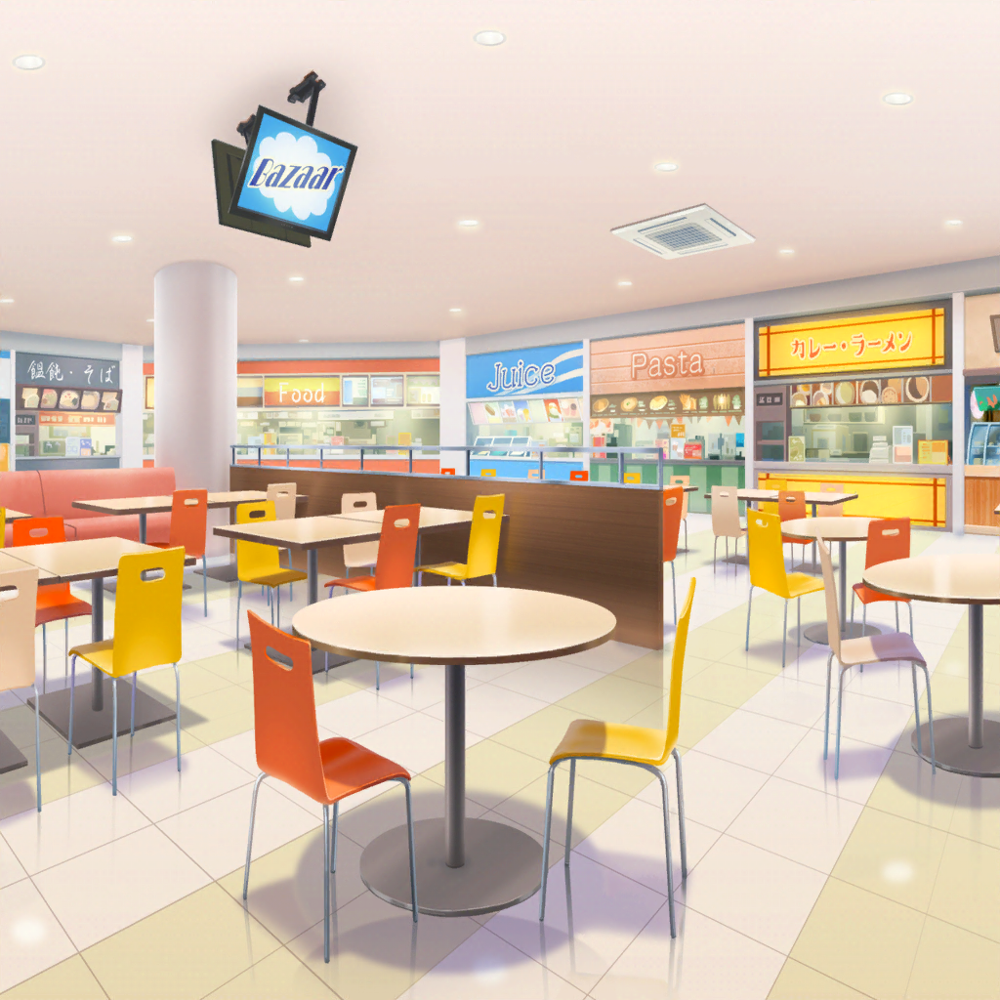

午後３時３０分
ショッピングモール フードコート
香澄
はぁ～、やっと席取れたね～
沙綾
ここっていっつも混んでるよね。
この時間でも席を確保するのが大変だもん
りみ
隣の席から椅子１つ借りてきたけど……
１人お誕生日席になっちゃうね。誰が座る？
香澄
ここはやっぱり有咲かな？
次に誕生日来るの有咲だし
有咲
まだ１か月以上先だぞ！
ぜってー嫌だって！
たえ
それじゃあ、私が座りたい！
誕生日まだ先だけど、いい？
香澄
もっちろん！
……はっ！ なんかおたえって……
お誕生日席が似合うね……っ！
沙綾
あははっ、確かに！ おたえ、よかったね
有咲
で、このフードコートでは
チョコのスイーツ、だったよな、りみ？
りみ
うん。
けど、いろんなお店があるから、みんな好きなもの食べよう
香澄
私は、絶対チョコレートパフェにする！
映画館でポップコーン食べたから、
甘いものが食べたくなっちゃった！
有咲
つーか、あのでかいサイズのポップコーン食べて、
よくまだ食べられるな？
香澄
全然いけるよね、おたえ？
たえ
うん。だって有咲……甘いものは別腹だよ？
有咲
当然みたいに言うな！
沙綾
おたえは何にするの？
クレープとかもあるみたいだよ？
たえ
そうだな～……
私は、やっぱり…………
ハンバーグかな
有咲
はぁ！？
たえ
ほら、あそこのお店のハンバーグ定食、美味しそうだよ
りみ
え？ どこどこ？
たえ
ほら、向こうの角のお店。
ステーキとかの写真あるところ
有咲
あのさ、おたえ……いきなり、肉？
ついさっき『甘いものは』別腹って言ってたじゃねーか
たえ
あ、訂正。
甘いものとお肉は、別腹
有咲
あの山盛りのポップコーン食べて、さらに定食かよ……
別腹、やべーだろ……
沙綾
なるほど～。
おたえはガッツリ食べる系か～。
え～、どうしようかな～
りみ
沙綾ちゃんは決まった？
沙綾
実は私、お昼ご飯食べてきてなくて、
ちょっとお腹空いてるんだよね〜……
沙綾
おたえがガッツリいくとなったら、
私もちょっとガッツリ目にいっちゃおうかな〜？
りみ
うん、そうしようよ！
せっかく来たんだし、食べたいもの食べたほうがいいよ
沙綾
それじゃあ私は……
あそこのパスタにしようかな？
ほら、今だったら並んでる人もそんなに多くないし
香澄
わ、いろんな種類があるね～。
さーや、頼んだやつ、ひと口ちょうだいっ！
沙綾
いいよ、ひと口と言わず、何口でも
香澄
やった～！
沙綾
外で食べるパスタって本当に美味しく感じない？
家でたまに弟と妹にパスタを作ってあげるんだけど、
やっぱりお店の味と全然違うんだよね。ゆで方が違うのかな？
香澄
さーやの作ったパスタ、私も食べてみたい！
いいな～、じゅんじゅんとさーなんは。
さーやみたいな、いいお姉ちゃんがいて～
沙綾
ふふー。でも、怒ると怖いよ～？
りみ
香澄ちゃんも、明日香ちゃんに料理とか作ってあげたりするの？
香澄
それは……す、する！ するよ！
この前はね、ラーメン作ってあげたし！
有咲
なるほど。袋から出して……ゆでたんだ
香澄
ち、違うって！
それだけじゃなくて、ちゃんとチャーシューも入れたし……
あ、ゆで玉子も入れた！
有咲
となると、玉子と麺で２回ゆでたのか。
うん、それはよくやった。
なかなか２回はゆでられねーからな
香澄
う～、絶対バカにしてるじゃん、有咲〜！
沙綾
ふふふっ。香澄、えらいえらい。
有咲はどうするの？ メニュー決まった？
有咲
えっと私は……
りみと一緒のものにしようかな？
もともとはそういう趣旨だったから、初志貫徹って感じ？
有咲
どうする、りみ？ パフェあるし、クレープもあるし。
あ、チョコレートケーキもあるって。
あれとか美味しそうじゃない？
りみ
えっと、私は――
りみ
ステーキ定食にしようかな？
一同
ええっ！？
有咲
きゅ、急に肉！？
ど、どうした、りみ……っ？
りみ
あ、あのね……っ。
ハンバーグのお店見てたら、
すっごいステーキが美味しそうで……
りみ
じ、実は夏休み中に、
世界中のお肉料理が食べられるイベントもやってたの。
それも行きたかったんだけど、場所が遠かったから行けなくて
りみ
私、チョコも好きだけど、お肉も大好きだから……
なんかステーキ定食が食べたくなっちゃった
香澄
いいじゃん、好きなもの食べちゃおうよ！
それじゃあ、りみりんはステーキ定食で決定ね！
りみ
有咲ちゃんも同じのにする？
有咲
ムリムリムリ！ そんなに食べれねーし！
私は、あそこでチョコレートケーキ頼んでくるから
沙綾
それじゃあ私、荷物番してるね。
はい、みんな行ってらっしゃーい♪